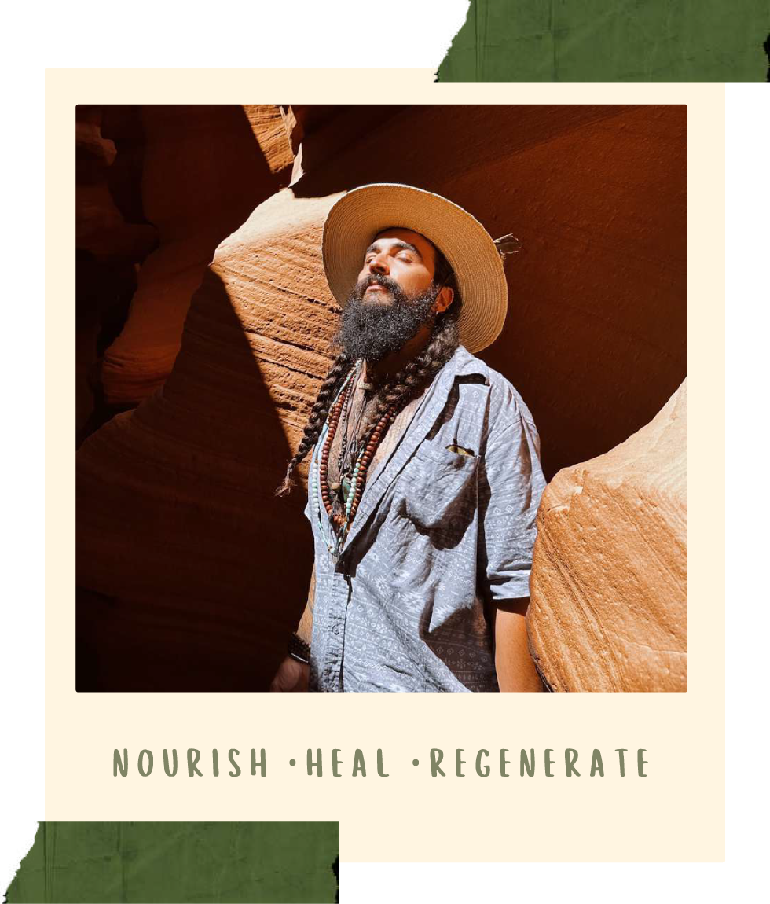

About
Classically trained in the French cuisine and guided by the intelligence of nature, Dali Solene unites the culinary and the ecological into one living expression of regeneration.
His work transforms food into a vehicle for healing — merging ancient techniques, regenerative agriculture, and conscious education to restore harmony between humanity and the planet.
Through Green Root Concepts, he invites individuals and communities to return to the ancient ritual of conscious co-creation that nourishes all.

Our Story
Green Roots Concepts bridges ecological science and ancestral wisdom to rebuild the relationship between land, food, and human vitality.
We design regenerative systems that restore soil fertility, capture water, and increase biodiversity — while teaching people how nourishment, biology, and culture are deeply interconnected.
Through integrated enterprises in land stewardship, culinary innovation, and education, we translate complex ecological principles into embodied, everyday practice.
Our work proves that regeneration is both measurable and meaningful — where carbon drawdown and biodiversity recovery coexist with community health, economic resilience, and a renewed sense of belonging to the natural world.